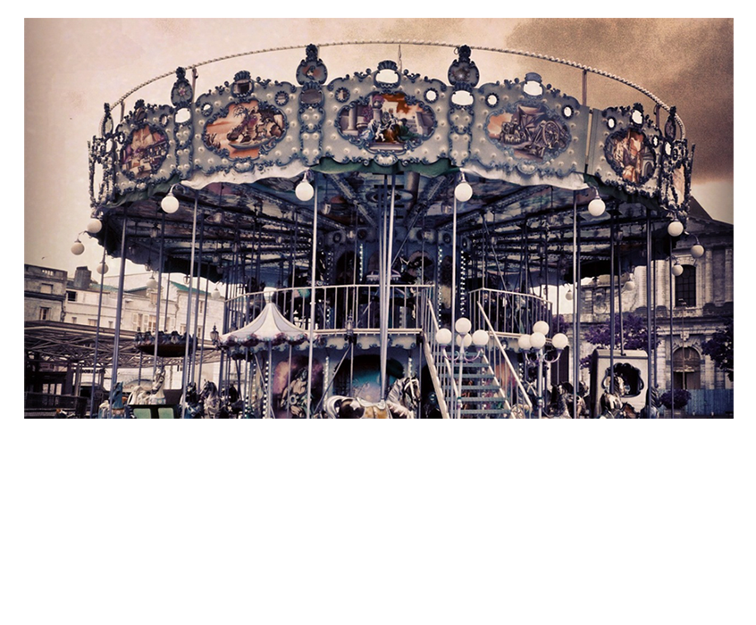
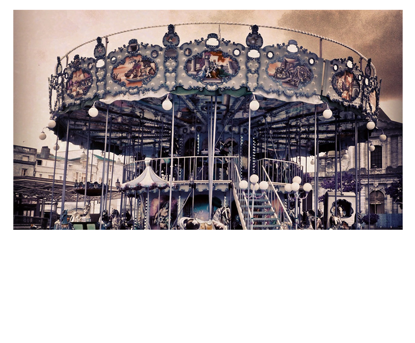

-
Front-End Librarian
Librarian of Web Services and ASLRITC - Note 2
- Note 3
15.5" Laptop / 1366 xw 768
that's about 7 vertical inches


Staying above the fold
requires that we know where the fold is.We can't.
↓
... under the fold :)The Myth of the Fold
is pervasive. The powerful assumption that users don't scroll seems observant - it feels right.
A mythconception.
Consider the ClickTale Scrolling Report / Jakob Nielsen's Alertbox: Scrolling and Attention / Blasting the Myth of the Fold / The Myth of the page Fold: Evidence from User Testing
↓
Users scroll through
single types of content
and backward through time

The Antipattern
We can't deny the formative power "the fold" has in a design committee, especially for a library website, which must sometimes be built to the expectations of many stakeholders. There can only be so much on the front page above the fold ...
unless you collapse, float, and cycle through large uncompressed images with javascript.
... anything to make the committee go home, amirite?
Carousels

↓
Harmless enough ...
<section id="carousel">
<ul class="slides">
<li>
<img src="http://placekitten.com/400/400" alt="A cat!">
</li>
<!-- repeat -->
</ul>
</section>
<!-- Javascript
======================
--> <script src="https://ajax.googleapis.com/ajax/libs/jquery/1.8.2/jquery.min.js"></script>
<script>
$('.slides').startCarousel();
</script>


The convenience of convention, the power [and ease] of jQuery, the wow-factor and high-level professionality associated with a slick animation leads to intuitive leaps of faith that carousels as design-elements actually work.
For whom?
State of the Web
- At the end of 2012, 3.6M smartphones entered the world per day (as oppose to 371k births).
- As of June 5th, 56% of American Adults owns one of these.
- 31% of them use their phones for the majority of their access to the web.
- Preference among all age groups is shifting away from desktops and laptops toward mobile devices.
- For 25% of Americans, their phone is their one and onle device.
The Bandwidth Divide
- The average size of a web page in 2012 was 1.25MB. (http://wpdaily.co/responsive-server-side/).
- The mean time to load just a 700kb website on your desktop: 6.9 secionds; from a phone? 10.2seconds.
- The Obama 2012 Campaign learned the hard way that a 3MB website won't even load on certain mobile devices (Error 413: Entity Too Large)
- Double Whammy: Images are between 52% and 59% of the payload. (http://www.webperformancetoday.com/2013/06/05/web-page-growth-2010-2013/) - and javascript load time comes in second.
- And yet 3G and 4G/LTE networks are getting slower
Patrons on ...
Performance
For every 1 second that a page takes to load there is a 65% bounce rate.65%!
Patrons on ...
Performance
71% of people expect mobile sites to load as fast or faster than desktops.71%!
Patrons on ...
Performance
The percentage of users that will abandon your website if it takes more than 4 seconds to load?74%
Performance is a Feature
The Reality of User Engagement
Let's take a moment to get mindblown!
Entertaining and informative

Slideshare
10%
of all books were published last year.380 Billion
photos taken last year in the U.S.822,240
websites created every day4 Billion
things shared on facebook every day90%
of data ever created was created in the past two yearsBrad's point is that
People's capacity for cruft is rapidly diminishing"Banner Blindness"
The Reality of User Engagement
Which part is the content that people care about?
Approximately 1% of visitors click on a feature. ... Of these clicks, 84% were on stories in position 1 with the rest split fairly evenly between the other four (~4% each). Erik Runyon
It didn't come as too much of a surprise that the slide in first position got the most attention, but I wasn't expecting to see such a large skew. The poor slides in position eight were barely ever seeing the light of day. Paul Kelly, University of York
The Rains of Castamere
Carousels
Haters gonna hate. Does it get worse?↓
Movement
↓
Accessibility
-
Moving UI elements usually reduce accessibility
- A Primer to Vestibular Disorders
- 35% of adults aged 40 years or older in the United States have experienced some form of vestibular dysfunction.
-
The ".08 second sweet spot"
- Low-literacy users, or those for whom English isn't a native language need more time.
grow
shrink
roll-in
fade-out
highlight-red
highlight-green
highlight-blue
Appears last
Appears first
Appears second
(def lazy-fib
(concat
[0 1]
((fn rfib [a b]
(lazy-cons (+ a b) (rfib b (+ a b)))) 0 1)))